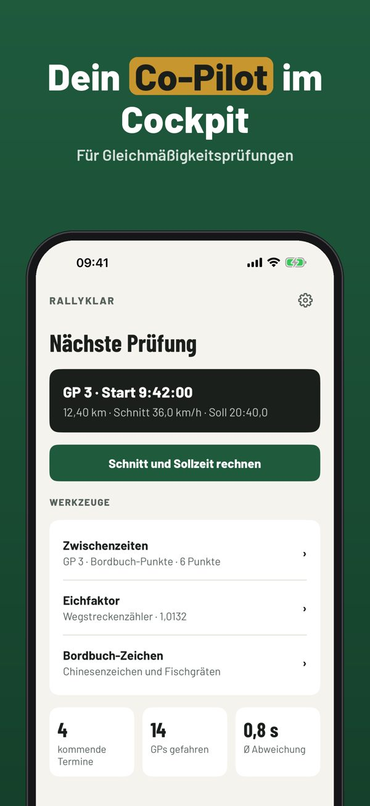
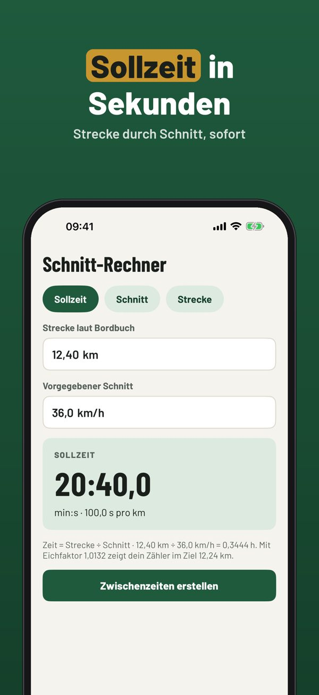
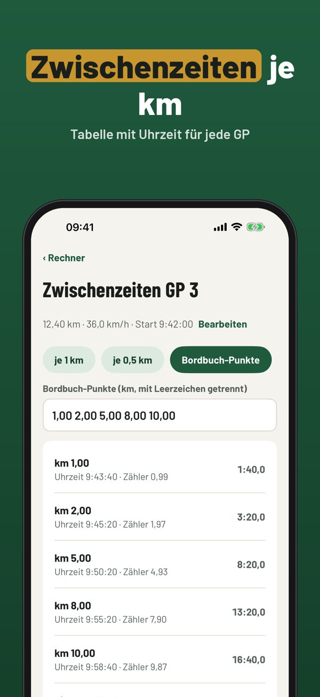
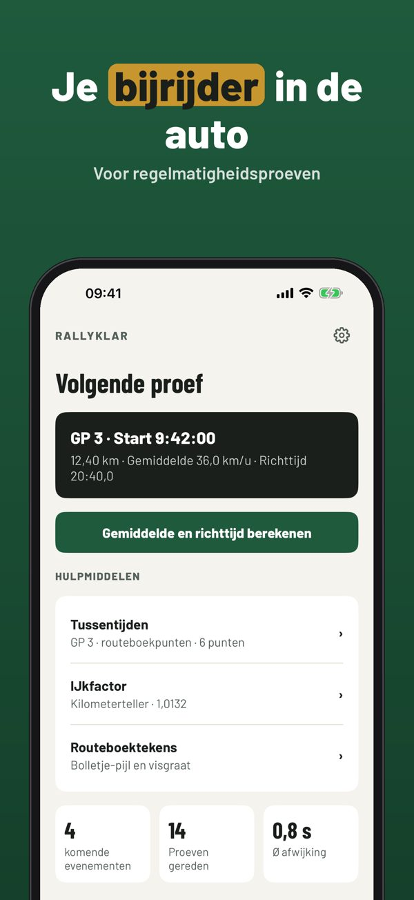
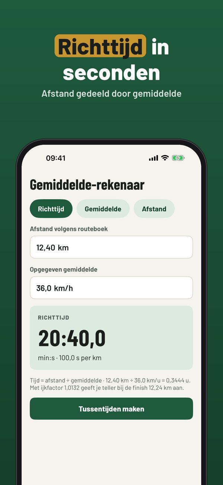
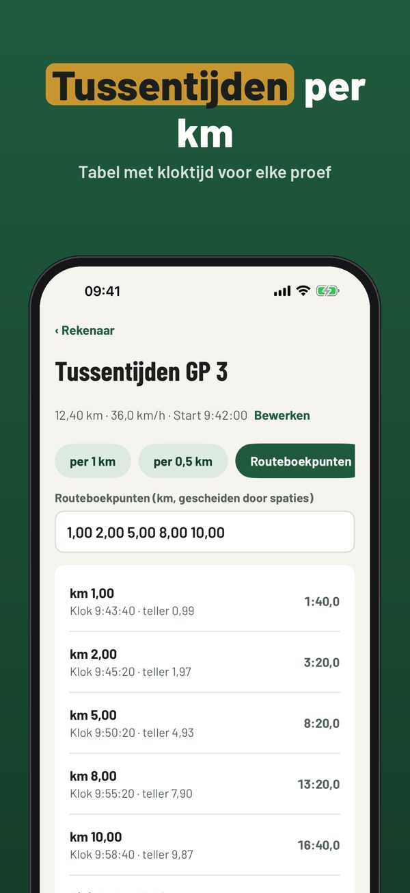

Schnitt, Sollzeit, Stoppuhr
Schnitt und Sollzeit rechnen, Zwischenzeiten für jede GP, Wegstreckenzähler eichen und die Stoppuhr mit Abweichung – offline im Cockpit, ohne GPS-Pflicht.



Rallyklar ist der Rechner und das Notizbuch für Beifahrer bei Oldtimer-Rallyes mit Gleichmäßigkeitsprüfungen: alle Werte aus Bordbuch und Wegstreckenzähler gibst du selbst ein.
Schnitt-Rechner, Korrekturfaktor und ein Termin sind ohne Kauf nutzbar. Die Vollversion ist ein Einmalkauf und schaltet Zwischenzeiten, Stoppuhr, unbegrenzte Termine und Ergebnisse frei. Kein Abo.
Rallyklar ist ein Rechen- und Notizwerkzeug. Es gilt immer die Ausschreibung des Veranstalters. Nicht verbunden mit ADAC, ÖAMTC oder Veranstaltern.
Terms of Use (EULA): https://www.apple.com/legal/internet-services/itunes/dev/stdeula/
Privacy: https://baytechbv.github.io/privacy/oldtimer-rallye-eu/
Gemiddelde, tijden, stopwatch
Gemiddelde en tijd berekenen, tussentijden per proef, kilometerteller ijken en een stopwatch met afwijking – offline in de auto, zonder verplichte GPS.



Rallyklar is de rekenhulp en het notitieboek voor bijrijders in oldtimer-regelmatigheidsritten: alle waarden uit routeboek en kilometerteller vul je zelf in.
De rekenhulp, de ijkfactor en één rit kun je zonder aankoop gebruiken. De volledige versie is een eenmalige aankoop voor tussentijden, stopwatch, onbeperkte ritten en uitslagen. Geen abonnement.
Rallyklar is een reken- en notitiehulp. Het reglement van de organisator geldt altijd. Niet verbonden aan organisatoren of clubs.
Terms of Use (EULA): https://www.apple.com/legal/internet-services/itunes/dev/stdeula/
Privacy: https://baytechbv.github.io/privacy/oldtimer-rallye-eu/